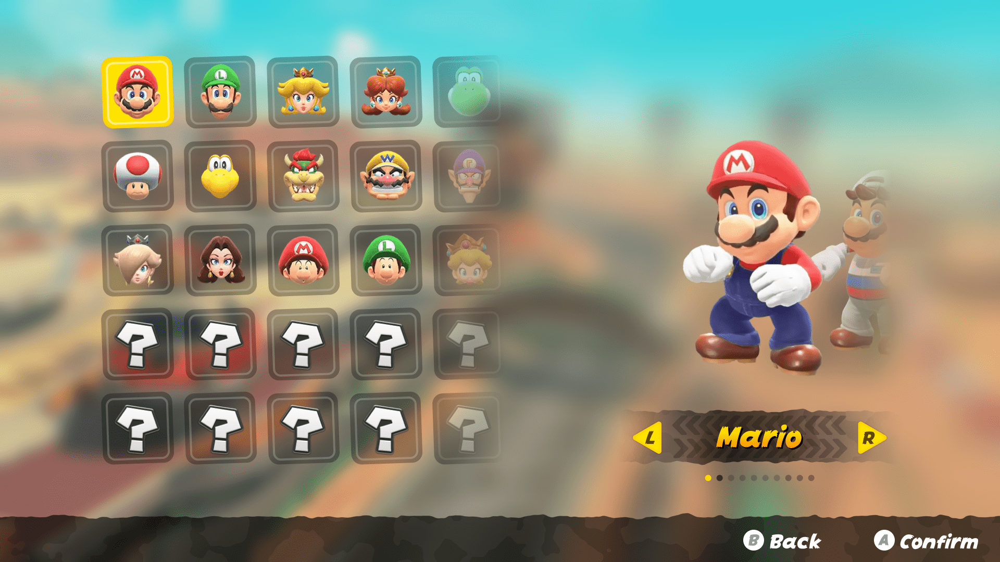
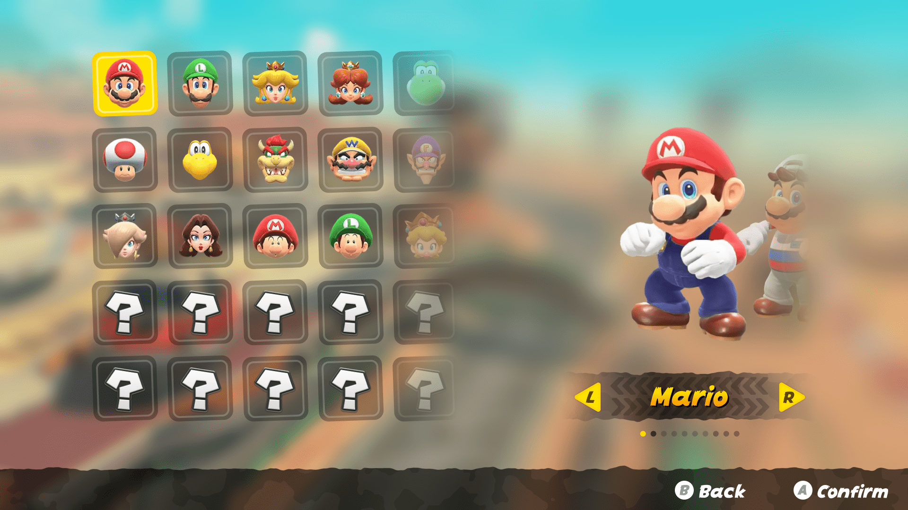

The Mario Kart World Character Selection Redesign is a UI/UX project aimed at improving clarity and usability within the character selection screen. The original interface presented characters and their alternate costumes on the same visual level, which caused confusion among many users, as observed in various online communities. This redesign reorganizes the structure to better differentiate between base characters and their variants, enhancing user comprehension and navigation. The project was entirely developed in Figma, starting with an analysis of user feedback and pain points.
Role
UI and UX designer.
Softwares used
Figma.
 
